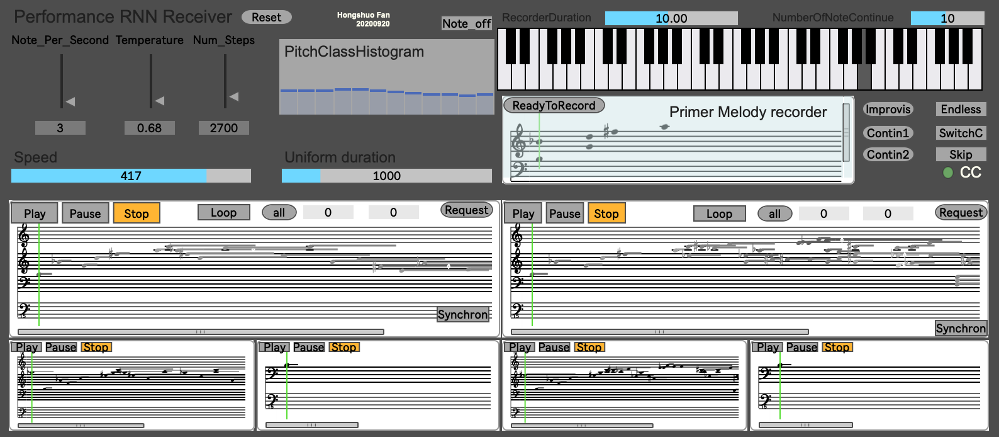

Metamorphosis
PROJECT DESCRIPTION
This work is realised by integrating multiple platforms and different programming languages, including MAX/MSP, TouchDesigner, Python and GLSL. The artificial intellectual performer is a pre-trained LSTM-based recurrent neural network, which could generate musical information based on specific rules and conditions (like rhythm density, temperature, primer melody and duration) in real-time.
To achieve real-time generate and interactive, The composer has developed a new system that can receive the human input as primer melody that can auto encode data and send it to the neural network. Then, receive the data from the neural network and auto decode to human-readable music information: music score. Therefore, during the performance, the human and AI performers can understand each other, which explore the topic of 'machine learning' vs 'human learning' as well.


Also, by combining the Nintendo switch’s joy-con controller and computer vision system to build the custom-made perform interfaces, therefore to achieve the purpose of linking human to machine, machine to machine, machine to human, multidimensional interaction.
PROGRAM NOTES
Metamorphosis is a real-time interactive audio-visual composition for one human performer and two artificial intellectual performers. Three performers will start by playing the same virtual ancient Chinese percussion instrument: Bianqing (磬). Then, by learning, imitating, having conflict and cooperating with each other, this instrument's shape and sound will evolve gradually and the performers themselves. From ancient to modern, concrete to abstract, the fusion of sound, image and live performance creates an immersive experience exploring the dramatic shift and co-evolution between human and AI.
PERFORMANCE REQUIREMENTS
Composer is the live electronics performer, will provide:
Computer MacBook Pro (macOS 10.14.6) with Max/ MSP 8.1.8, TouchDesigner099, 2020.2811, Python 3.8.5
Audio interface: MOTU UltraLite mk4 ( 8 outputs)
USB-C Digital AV Multi-port Adapter. Nintendo switch’s joy-con
The organiser should provide the following equipment:
8 speakers and 1 sub-bass speaker.
Projector and Screen, or any other display system.
Desk to put computer, audio interface.
Space
Traditional concert stage
Spatial diagram